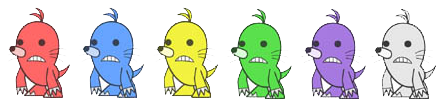

Game Screen
Battle Screen (4-Player Mode)
Panel
Rules
The moles you bash are displayed inside your panel. When you have four moles stockpiled, you'll make a "hand" based on their colors. The better your hand, the more energy you'll deplete from your opponents. Players are removed from the game when they run out of energy; the last remaining player (or the one with the most energy when time expires) is the winner.
Finishing a Round
The round is over when the final standings have been determined or time expires. If nobody but CPU players remain, the game ends immediately.
List of Hands
|
Two moles of like color |
Light damage |
|
Two pairs of like-colored moles |
Medium damage |
|
Three moles of like color |
Heavy damage |
|
Four moles of like color |
Devastating damage |
|
Four moles, all differently colored |
Energy restored slightly |
Mole Colors and Extra Damage
The moles come in a total of six colors. If you make a hand with moles the same color as an opponent's hammer, that opponent will receive more damage than the others.


Rainbow Mole
The rainbow mole is a "wild card," automatically changing color to create the most powerful hand for you.

Item Box
Hit an item box to receive one of the following bonuses.
Gauge Refill
 |
Restores a little energy |
Free Moles
 |
Frees all the moles that the players have collected in their panels |
Big Hammer
|
Enlarges your hammer, making it easier to bash moles |

Bombs
If you hit a bomb, you will be unable to bash moles for a period of time.
Hints
Keep an eye on which moles will come out next, and build your hand strategy around that. Try to aim for moles that are easier to build hands with. Also, try hitting moles on purpose in order to break up your opponents' hands.